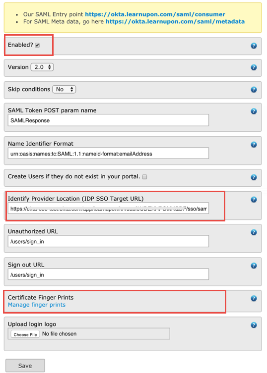

Login to your LearnUpon account.
Navigate to the settings tab, then select Single Sign On - SAML:

On the Single Sign On - SAML page:
Make sure Enabled is checked.
Identity Provider Location. Copy and paste the following Login URL/Sign On URL in this field:
Sign into the Okta Admin dashboard to generate this value.
Certificate Finger Prints. Click Manage Finger Prints and follow the instructions to upload the following certificate:
Sign into the Okta Admin dashboard to generate this value.

Click Save.
After receiving confirmation from LearnUpon that SAML is enabled, in the Okta Dashboard for the LearnUpon application, select Okta username for the Default username format, as shown below. 
Click Save.
Done!
Notes:
IdP-initiated flows are supported.
SP-initiated flows and Just In Time (JIT) provisioning are not supported.